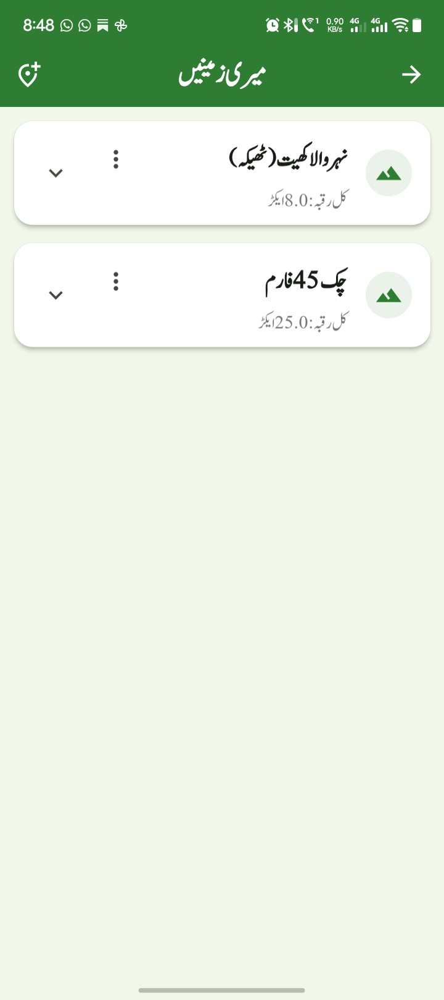
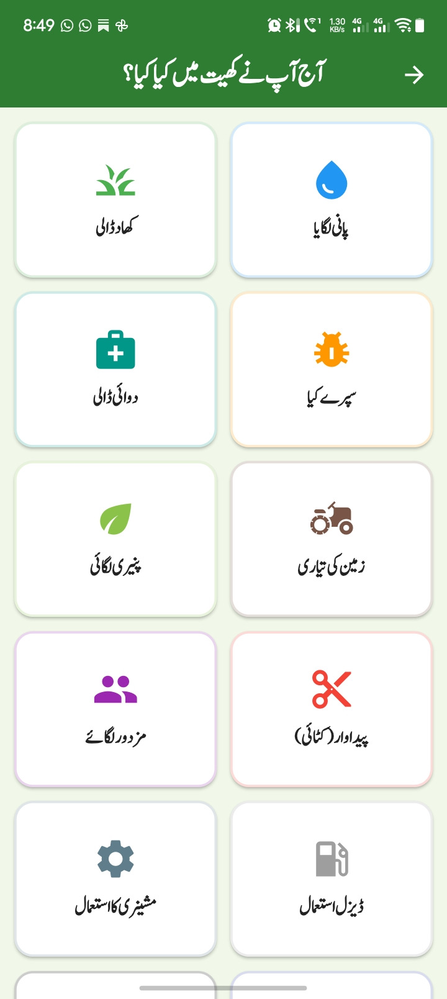
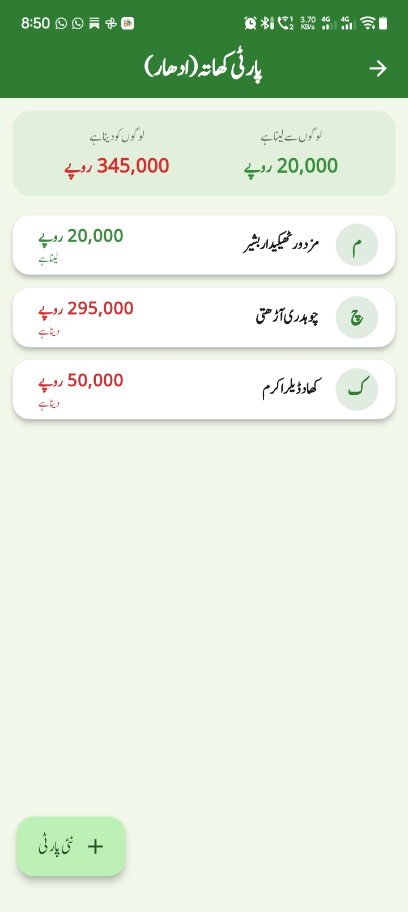
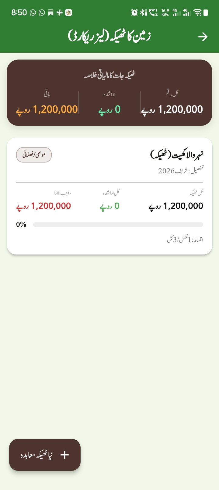
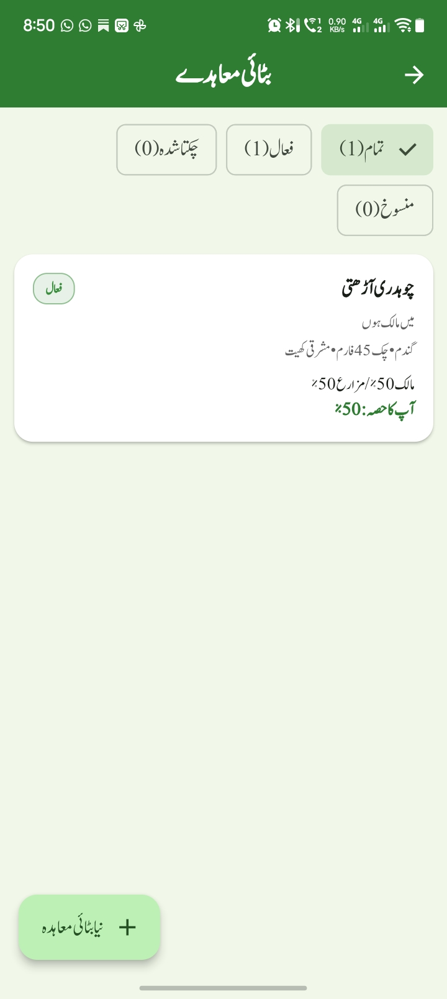
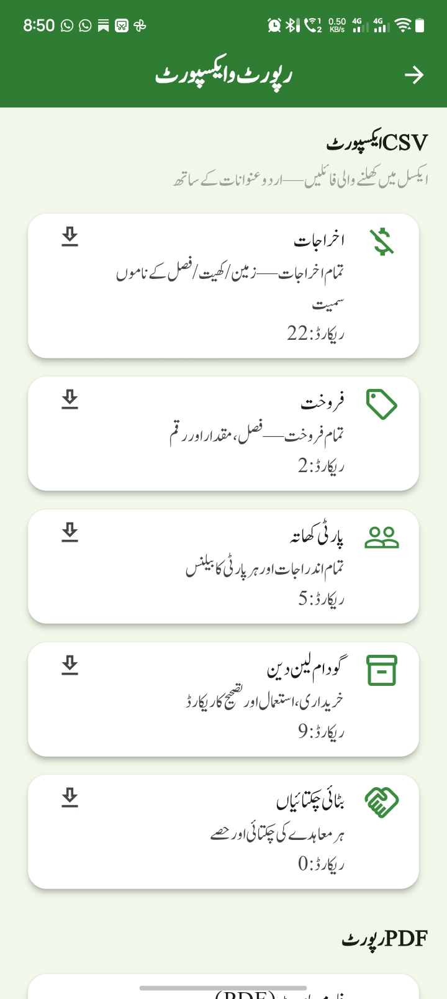

کسان دوست
آپ کی ڈیجیٹل کھیتی ڈائری
اپنی زمین، فصل، خرچے، پیداوار، گودام اور منافع کا حساب ایک ہی جگہ رکھیں۔ سادہ اردو میں، مکمل آف لائن، بالکل مفت۔

مکمل آف لائن
بغیر انٹرنیٹ چلے — کھیت میں سگنل ہو یا نہ ہو
سادہ اردو
پوری ایپ اردو میں، دائیں سے بائیں
کھیتی کا حساب
زمین سے لے کر منافع تک، ہر چیز ایک جگہ
بالکل مفت
کوئی فیس نہیں، کوئی اشتہار نہیں
ایک ایپ، آپ کی پوری کھیتی کا حساب
کاپی اور رجسٹر کو بھول جائیں — ہر چیز تاریخ کے ساتھ محفوظ، اور حساب خودکار۔
زمین اور فصل
میری زمینیں
اپنی تمام زمینیں اور ہر زمین کے کھیت — نام، سائز اور پانی کے ذریعے سمیت۔

میری فصلیں
کون سی فصل کس کھیت میں، کب بوئی، کتنی جگہ پر — پورے سیزن کا ریکارڈ۔

روزمرہ کا حساب
آج کے کام
روز کی ڈیجیٹل ڈائری — پانی، کھاد، سپرے، مزدوری، ہر کام تاریخ کے ساتھ۔

خرچے
ہر روپیہ زمرے کے ساتھ لکھیں — اور گودام کی شے چن کر قیمت خودکار بھروائیں۔

گودام
کھاد، بیج، سپرے، دوائی، ڈیزل کا اسٹاک — استعمال پر خودکار کٹوتی، پوری لین دین تاریخ۔

آمدن اور منافع
پیداوار اور فروخت
کتنی پیداوار ہوئی، کس کو کتنے ریٹ پر بیچی — وصولی سمیت مکمل حساب۔

منافع و نقصان
ہر فصل کا الگ حساب — کتنا لگا، کتنا آیا، کتنا بچا۔ اندازہ نہیں، اصل اعداد۔

پارٹی کھاتہ
ادھار کا صاف ریکارڈ — کس سے لینا ہے، کس کو دینا ہے، رسید سمیت۔

یاددہانی اور تحفظ
الارم اور یاددہانیاں
وقت پر بجنے والے الارم — فون لاک ہو تو بھی فل اسکرین الارم، سنوز کے ساتھ۔

ٹھیکہ
زمین ٹھیکے پر دی ہو یا لی ہو — معاہدہ، کل رقم اور قسطوں کا پورا حساب۔

بٹائی
شرکت پر دی ہوئی فصل کا حصہ داری حساب — پیداوار کی منصفانہ تقسیم۔

عشر
فصل پر واجب عشر کا خودکار حساب — نقد ادائیگی ہو یا جنس میں۔

رپورٹس
ہر حصے کی رپورٹیں — CSV اور PDF میں نکالیں، کسی کو بھیجیں۔

بیک اپ
روزانہ خودکار بیک اپ — فون بدل جائے تو بھی آپ کا ڈیٹا محفوظ رہے۔
سات آسان قدموں میں شروع کریں
پہلی بار ایپ کھولنے سے لے کر منافع دیکھنے تک — سب کچھ ترتیب سے۔
ایپ ڈاؤن لوڈ اور انسٹال کریں
نیچے ڈاؤن لوڈ بٹن سے APK فائل لیں، انسٹال کریں اور کھولیں۔
اجازتیں دیں
پہلی بار کھولنے پر نوٹیفکیشن اور الارم کی اجازت مانگی جائے گی — وقت پر یاددہانی کے لیے دونوں دے دیں۔
تعارفی دورہ یا ڈیمو دیکھیں
تین صفحات کا تعارف دیکھیں، یا «ڈیمو دیکھیں» چن کر نمونہ ڈیٹا کے ساتھ ہر اسکرین آزمائیں۔
اپنی زمین اور کھیت شامل کریں
«میری زمینیں» میں زمین بنائیں اور اس کے کھیت — نام اور سائز کے ساتھ۔
فصل کا سیزن شروع کریں
«میری فصلیں» میں نئی فصل — کون سی فصل، کون سا کھیت، کب بوئی گئی۔
روز کے کام اور خرچے لکھیں
«آج کے کام» میں ہر کام درج کریں؛ خرچہ لکھتے وقت گودام کی شے چنیں تو قیمت اور اسٹاک خود سنبھل جائے گا۔
پیداوار، فروخت اور منافع دیکھیں
کٹائی پر پیداوار درج کریں، فروخت لکھیں، اور «منافع و نقصان» میں ہر فصل کا اصل حساب دیکھیں۔
ایپ اندر سے کیسی لگتی ہے
سادہ اردو، بڑے بٹن، ہر چیز ایک نظر میں — کسی بھی تصویر پر ٹیپ کر کے بڑا دیکھیں۔
📖 مکمل دستاویز
ہر اسکرین کی تفصیل، الارم کی اجازتیں، بیک اپ کا طریقہ، سوال جواب اور تکنیکی جائزہ — اردو اور انگریزی، دونوں زبانوں میں مکمل رہنمائی۔
اردو دستاویز
کسان دوست — مکمل دستاویز: سادہ اردو میں ہر سہولت کی پوری وضاحت۔
آن لائن پڑھیں ورڈ ڈاؤن لوڈEnglish documentation
Kisan Dost — Complete Documentation: every feature explained in plain English.
Read online Word downloadعام سوالات اور جوابات
جی ہاں! کسان دوست مکمل آف لائن ہے — اسے انٹرنیٹ کی بالکل ضرورت نہیں۔ کھیت میں سگنل ہو یا نہ ہو، ایپ چلتی رہتی ہے اور آپ کا سارا ڈیٹا آپ کے فون میں محفوظ رہتا ہے۔
جی ہاں، مکمل مفت — کوئی فیس، کوئی ماہانہ خرچہ، کوئی اشتہار نہیں۔ کوئی اکاؤنٹ بنانا نہیں پڑتا اور کوئی لاگ اِن نہیں۔
ترتیبات میں جا کر چار اجازتیں جانچیں: نوٹیفکیشن، صحیح وقت پر الارم، فل اسکرین الارم اور بیٹری بچت سے استثنیٰ۔ پھر «ٹیسٹ الارم» چلائیں — پندرہ سیکنڈ بعد الارم بجنا چاہیے۔ یہ بھی دیکھ لیں کہ یاددہانیوں کا بڑا سوئچ آن ہو۔
گھبرائیں نہیں — خرچے، فروخت، پیداوار، کام اور پارٹیاں فوراً ختم نہیں ہوتیں، وہ «حذف شدہ» (ری سائیکل بن) میں چلی جاتی ہیں۔ ترتیبات سے ری سائیکل بن کھول کر ایک ٹیپ میں واپس لائیں۔
پرانے فون میں بیک اپ بنائیں، فائل نئے فون میں بھیجیں، وہاں کسان دوست انسٹال کر کے بیک اپ اسکرین سے درآمد کر لیں۔ ایپ روزانہ خودکار بیک اپ بھی بناتی ہے۔
جی ہاں — رقم اور مقدار اردو ہندسوں (۱۲۳) میں بھی لکھ سکتے ہیں اور انگریزی ہندسوں (123) میں بھی۔ ایپ دونوں کو درست سمجھتی ہے۔
ترتیبات میں «ڈیمو ختم کریں» دبائیں — صرف نمونہ ڈیٹا صاف ہو گا، آپ کا اپنا اصل ڈیٹا بالکل محفوظ رہے گا۔
ہر ورژن میں کیا بہتر ہوا
| ورژن | نمایاں تبدیلیاں |
|---|---|
| 1.0.0 | ابتدائی ریلیز — مکمل ڈیجیٹل ڈائری: زمین، فصل، خرچے، پیداوار، گودام، ٹھیکہ، عشر، پارٹی کھاتہ، بٹائی، الارم۔ |
| 1.0.1 | سیکیورٹی و استحکام — تفصیلی آڈٹ کے بعد اندرونی مضبوطی۔ |
| 1.0.2 | الارم کی تشخیص — ٹیسٹ الارم اور اجازتوں کی درستگی۔ |
| 1.0.3 | سنوز کی درستگی — 5، 10 یا 15 منٹ کا انتخاب اب درست کام کرتا ہے۔ |
| 1.0.4 | لاک اسکرین الارم کی بڑی درستگی — صارف کی تصدیق: «الارم اب کام کر رہا ہے»۔ |
| 1.0.5 | بھرپور نمونہ ڈیٹا — ڈیمو موڈ میں ہر اسکرین کے لیے مکمل نمونہ ڈیٹا۔ |
| 1.0.6 | خرچے سے گودام کا جوڑ — خرچہ لکھتے ہی گودام کی شے سے خودکار قیمت اور اسٹاک کی کٹوتی۔ |

⬇ کسان دوست ڈاؤن لوڈ کریں
ورژن 1.0.6 — مفت، مکمل آف لائن۔ ڈاؤن لوڈ کر کے انسٹال کریں اور اپنی ڈیجیٹل ڈائری شروع کریں۔
APK ڈاؤن لوڈ کریں (v1.0.6)kisan-dost-1.0.6.apk • ~76 MB • SHA-256: cf0de7a0c87aef365bb7f9a0476039e0ddc256f61be1806bf873330c42efe36e
APK فائل ڈاؤن لوڈ کر کے کھولیں؛ انسٹال کی اجازت دیں۔
کسان دوست ہمیشہ مفت رہے گی — اسے مفت رکھنے میں ہمارا ساتھ دیں